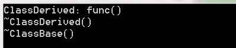

1.构造函数不能为虚函数
当我们将构造函数定义为虚函数时,会直接报错:
首先回忆下以前学的virtual虚函数概念:
分析:
假如构造函数是虚函数的话,由于对象开始还未分配内存空间,所以根本就无法找到虚函数表,从而构造函数也无法被调用.所以构造函数是不能成为虚函数.
2. 析构函数可以为虚函数
首先回忆下析构函数:
当某个内对象被注销时,编译器会自动顺序调用该类以及其父类的析构函数,而不会调用派生类的析构函数.
虚析构函数的好处
假如我们通过派生类生成基类对象时,如果析构函数是虚函数,则我们释放其基类对象时,能使整个类(包括派生类)对象完全释放,如果析构函数只是普通函数,则不能析构完全.
分析:
所以当我们在用多态的时候(通过基类来调用派生类成员函数),析构函数最好为虚函数
示例如下:
#include <iostream> using namespace std; class ClassBase { public: ClassBase(){}; virtual ~ClassBase() { cout<<"~ClassBase()"<<endl; } virtual void func() //虚函数成员 { cout<<"ClassBase: func()"<<endl; } }; class ClassDerived : public ClassBase { public: ClassDerived(){}; ~ClassDerived() { cout<<"~ClassDerived()"<<endl; } void func() //虚函数成员 { cout<<"ClassDerived: func()"<<endl; } }; int main() { ClassBase *p = new ClassDerived; p->func(); //通过多态来调用派生类虚函数 delete p; return 0; }
打印如下:
